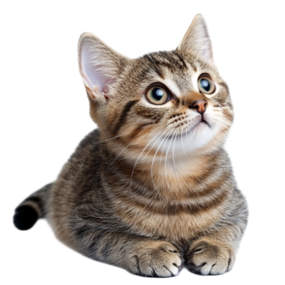

The cat (Felis catus), also referred to as domestic cat or house cat, is a small domesticated carnivorous mammal. It is the only domesticated species of the family Felidae. Advances in archaeology and genetics have shown that the domestication of the cat occurred in the Near East around 7500 BC. It is commonly kept as a pet and farm cat, but also ranges freely as a feral cat avoiding human contact. Valued by humans for companionship and its ability to kill vermin, the cat's retractable claws are adapted to killing small prey like mice and rats. It has a strong, flexible body, quick reflexes, and sharp teeth, and its night vision and sense of smell are well developed. It is a social species, but a solitary hunter and a crepuscular predator. Cat communication includes vocalizations—including meowing, purring, trilling, hissing, growling, and grunting–as well as body language. It can hear sounds too faint or too high in frequency for human ears, such as those made by small mammals. It secretes and perceives pheromones.
 Female domestic cats can have kittens from spring to late autumn in temperate zones and throughout the year in equatorial regions, with litter sizes often ranging from two to five kittens. Domestic cats are bred and shown at events as registered pedigreed cats, a hobby known as cat fancy. Animal population control of cats may be achieved by spaying and neutering, but their proliferation and the abandonment of pets has resulted in large numbers of feral cats worldwide, contributing to the extinction of bird, mammal, and reptile species.
As of 2017, the domestic cat was the second most popular pet in the United States, with 95.6 million cats owned and around 42 million households owning at least one cat. In the United Kingdom, 26% of adults have a cat, with an estimated population of 10.9 million pet cats as of 2020. As of 2021, there were an estimated 220 million owned and 480 million stray cats in the world.
The origin of the English word cat, Old English catt, is thought to be the Late Latin word cattus, which was first used at the beginning of the 6th century.[4] The Late Latin word may be derived from an unidentified African language.[5] The Nubian word kaddîska 'wildcat' and Nobiin kadīs are possible sources or cognates.[6]
The forms might also have derived from an ancient Germanic word that was absorbed into Latin and then into Greek, Syriac, and Arabic.[7] The word may be derived from Germanic and Northern European languages, and ultimately be borrowed from Uralic, cf. Northern Sámi gáđfi, 'female stoat', and Hungarian hölgy, 'lady, female stoat'; from Proto-Uralic *käďwä, 'female (of a furred animal)'.[8]
The English puss, extended as pussy and pussycat, is attested from the 16th century and may have been introduced from Dutch poes or from Low German puuskatte, related to Swedish kattepus, or Norwegian pus, pusekatt. Similar forms exist in Lithuanian puižė and Irish puisín or puiscín. The etymology of this word is unknown, but it may have arisen from a sound used to attract a cat.[9][10]
A male cat is called a tom or tomcat[11] (or a gib,[12] if neutered). A female is called a queen[13][14] (or sometimes a molly,[15] if spayed). A juvenile cat is referred to as a kitten. In Early Modern English, the word kitten was interchangeable with the now-obsolete word catling.[16] A group of cats can be referred to as a clowder, a glaring,[17] or a colony.[18]